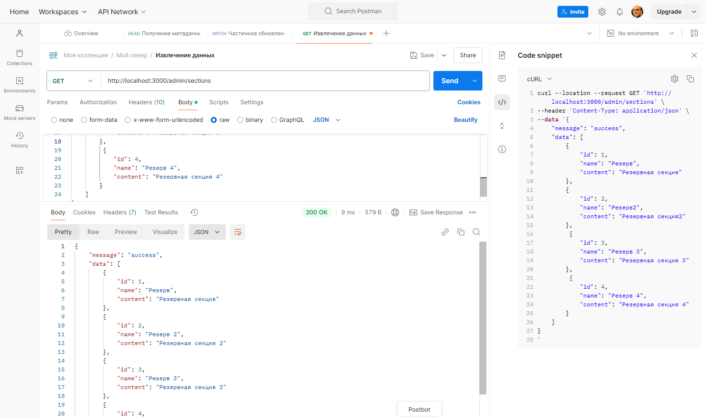
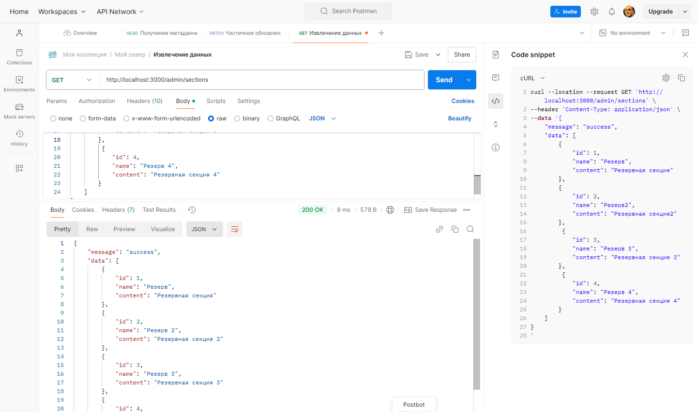
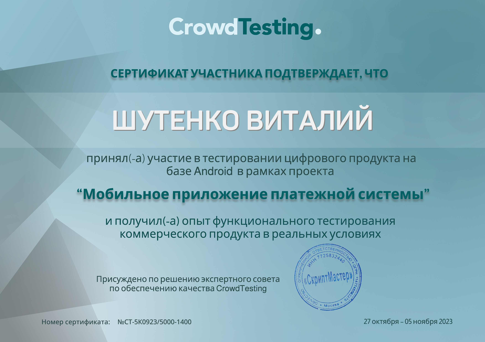

Шутенко Виталий
Тестировщик ПО
Email: shutenko1972@gmail.com
Телеграмм: https://t.me/shutenkovitaly

- Ответственность и внимание к деталям
- Умение работать в команде
- Стремление к непрерывному профессиональному развитию.
- Аналитический склад ума и способность к критическому мышлению
- Высокая обучаемость и быстрая адаптация к новым инструментам и технологиям
- Способность к многозадачности и эффективному управлению временем
— Креативность и способность находить нестандартные решения
— Отличные коммуникативные навыки и умение ясно формулировать свои мысли
Среднее специальное образование
— Муниципальное общеобразовательное учреждение - средняя общеобразовательная школа с. Карпенка Краснокутского района Саратовской области
— ГОУ НПО № 64
Повышение квалификации, курсы
— ООО «Учебный комбинат «ПРОФКАДРЫ» по дополнительной образовательной программе «Азбука цифры. Специалист по тестированию в области информационных технологий»
— АНО ВО «Университет Иннополис» по дополнительной образовательной программе «Основы тестирования ПО»
- Технологии веб-разработки: HTML, CSS, JSON, SQL
- Инструмент работы с HTML, CSS, JSON, SQL: WebStorm, GitHub
- Инструмент работы с базой данных: SQLite, DB Browser for SQLite
- Системы управления версиями: GitLab, GitHub
- Инструмент работы в сервисах по разработке интерфейса: Figma
- Инструмент для управления знаниями и документацией: GitBook
- Управление проектами: Jira, Yandex Tracker, Test IT
- Инструмент для управления задачами: Trello, Yandex Tracker
- Инструмент для управления данными и планирования проектов: Google Docs, Google Sheets
- Программные интерфейсы приложений: Postman, Swagger
- Инструменты разработчика: Developer Tools
- Управление тестированием ПО: Составление тест плана, чек-листов, тест-кейсов, баг-репортов, отчётов о тестировании
- Мобильное тестирование: Тестирование Android
- Тестировщик (с 01.12.2022 по по настоящее время)
- Выполнение функционального и юзабилити-тестирования приложений, сайтов и устройств
- Тестирование мобильных платёжных систем
- Разработка тестовых сценариев и чек-листов
- Документирование ошибок и составление баг-репортов
Мои задачи включали:
1. Анализ предоставленного ресурса и составление списка потенциальных тестовых сценариев и условий
2. Ручное функциональное тестирование:
- Тестирование всех возможных форм ввода, полей и строк
- Тестирование на граничные значения
- Применение методик тест-дизайна
- Поведенческое тестирование (метод черного ящика)
3. UX/UI тестированиме:
- Проводил юзабилити-тестирование и тесты для улучшения пользовательского опыта веб-приложения
- Анализировал результаты тестирования и формировал рекомендации по доработке интерфейса
Paywall.pw
- Тестирование сервиса Paywall.pw
- Paywall - это сервис для автоматической монетизации закрытых Телеграм-каналов и групп
CScalp
- Проводил тестирование бета версии бесплатного терминала для трейдинга CScalp
Crowd Testing
- Тестирование цифрового продукта на базе Android в рамках проектов "Мобильная платёжная система" и "Мобильное приложение платежной системы". Проводил функциональное тестирование коммерческого продукта в реальных условиях
Азбука веры
- Администратор-волонтёр по составлению и добавлению толкования на сайте Азбука веры
- Тестирование и редактирование толкований
 


Мобильное приложение
Мобильная платёжная система

ООО «Учебный комбинат «ПРОФКАДРЫ»

АНО ВО «Университет Иннополис»